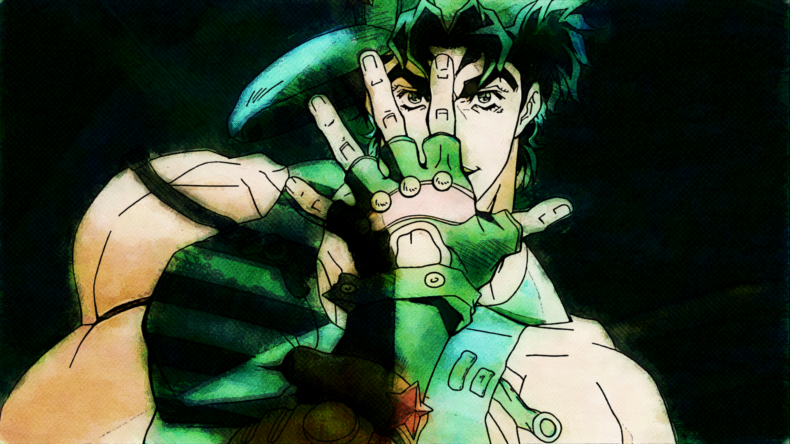
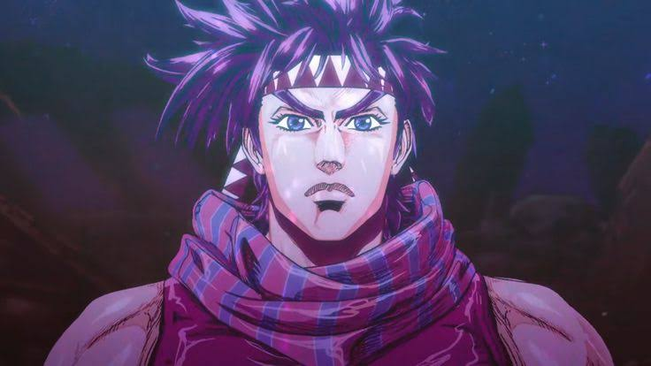
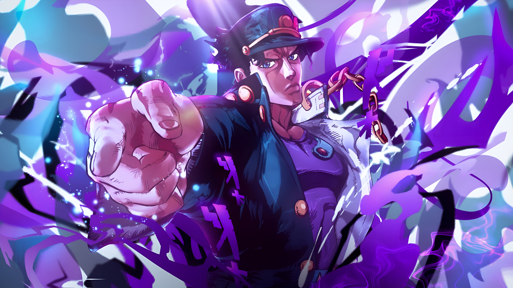
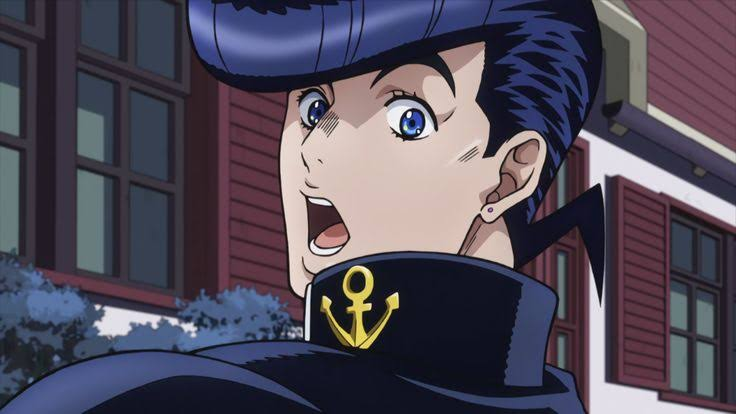
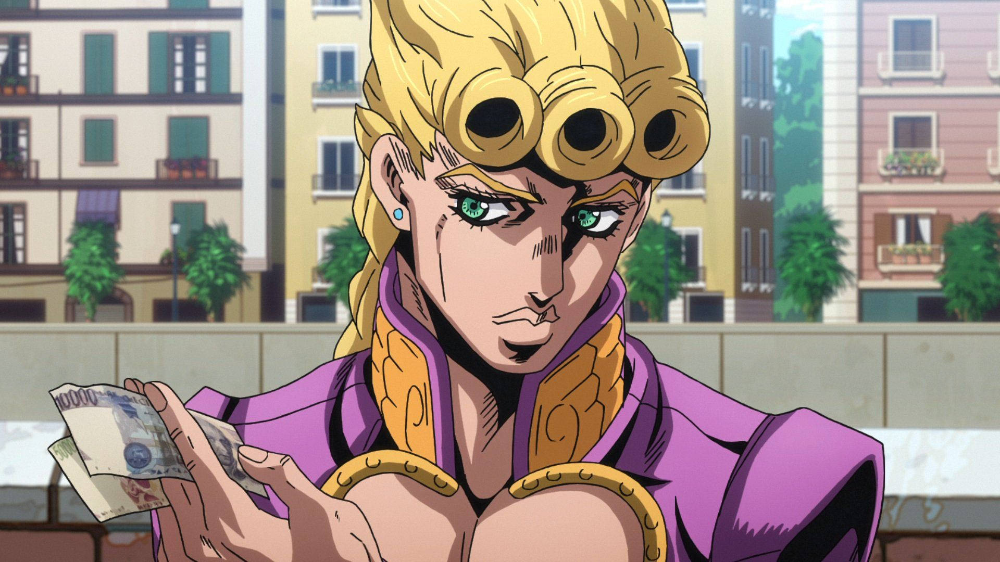
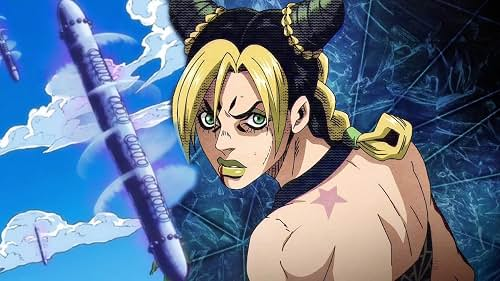

Jojo's Bizarre Adventure
A história de JoJo's Bizarre Adventure acompanha a saga multigeracional da família Joestar em sua luta constante contra forças sobrenaturais e vilões excêntricos. Escrita e ilustrada por Hirohiko Araki, a obra se divide em várias partes independentes, onde cada arco foca em um novo descendente da linhagem — carinhosamente apelidado de "JoJo".
Jonathan Joestar

Jonathan é um jovem nobre, educado e honrado, que valoriza a justiça, a lealdade e o respeito ao próximo. Sua vida muda quando Dio Brando passa a morar com sua família e começa a tratá-lo como rival. Mesmo diante das crueldades de Dio, Jonathan mantém sua bondade e enfrenta os desafios com coragem. Sua personalidade representa o ideal de um herói que luta pelo que considera certo.
O Hamon do Jonathan
Jonathan aprende o Hamon com Will Anthonio Zeppeli, um mestre que o encontra durante sua jornada para derrotar Dio. O treinamento ocorre depois que Jonathan descobre que Dio se tornou uma ameaça sobrenatural, usando a Máscara de Pedra para transformar pessoas em vampiros.
- Como funciona: o Hamon é uma energia produzida por uma respiração controlada, semelhante à energia do Sol. Por isso, é especialmente eficaz contra vampiros e outros seres que não toleram a luz solar.
- Estilo de luta: Jonathan combina força física, técnicas de combate corpo a corpo, espada e Hamon. Seu estilo é direto, baseado na resistência, na coragem e em golpes poderosos.
- Técnicas marcantes: Sunlight Yellow Overdrive e Scarlet Overdrive.
- Lore: Jonathan é o primeiro JoJo e enfrenta Dio Brando, seu irmão adotivo e principal inimigo. A rivalidade entre os dois inicia uma longa história de conflitos que influencia as gerações seguintes da família Joestar.
Joseph Joestar

Joseph é o neto de Jonathan e possui uma personalidade bastante diferente da dele. Extrovertido, brincalhão e provocador, costuma confiar mais na criatividade e na improvisação do que em planos elaborados. Apesar de seu comportamento descontraído, é inteligente, observador e capaz de encontrar soluções inesperadas para situações complicadas. Também demonstra preocupação com as pessoas próximas.
O Hamon do Joseph
Joseph aprende Hamon com Lisa Lisa, uma especialista extremamente habilidosa (e sua mãe), com a ajuda de seu assistente Messina. Seu treinamento acontece em Veneza, na Itália, como preparação para enfrentar os Homens do Pilar.
- Como funciona: assim como Jonathan, Joseph utiliza a respiração para produzir Hamon, mas costuma aplicar a energia de maneira criativa, inclusive por meio de objetos condutores.
- Estilo de luta: improvisação, armadilhas, blefes, leitura dos adversários e combate físico. Joseph prefere enganar o oponente a enfrentá-lo de maneira previsível.
- Técnicas marcantes: Clacker Volley, uso de Hamon em objetos e estratégias de combate baseadas em previsões e truques.
- Lore: neto de Jonathan, Joseph descobre a existência dos Homens do Pilar, seres antigos ligados à origem da Máscara de Pedra. Ele enfrenta personagens como Esidisi, Wamuu e Kars. Sua maior característica é transformar inteligência e imprevisibilidade em armas, mesmo quando está em desvantagem.
Jotaro Kujo

Jotaro é um jovem reservado, sério e de poucas palavras. Sua aparência intimidadora e seu comportamento aparentemente frio fazem com que pareça indiferente, mas ele se importa profundamente com sua família e seus companheiros. É confiante, determinado e prefere agir diretamente em vez de desperdiçar tempo com explicações desnecessárias.
Star Platinum
Jotaro desperta seu Stand quando a influência de Dio começa a afetar a linhagem Joestar. Diferentemente do Hamon, o Stand é uma manifestação da energia espiritual e da força de vontade de seu usuário. Jotaro não aprende seu poder com um mestre tradicional; ele aprende a compreendê-lo durante os confrontos.
- Poderes: força física extraordinária, velocidade, precisão e reflexos excepcionais. Mais tarde, Star Platinum revela a capacidade de parar o tempo por alguns instantes.
- Estilo de luta: combate corpo a corpo, ataques rápidos e precisos, resistência e análise dos padrões dos inimigos.
- Técnica marcante: ORA ORA ORA, uma sequência de golpes extremamente rápidos.
- Lore: Jotaro parte em uma viagem pelo mundo com seu avô Joseph e outros aliados para salvar sua mãe, Holly. A causa do problema é Dio, que retornou décadas depois dos acontecimentos da primeira parte. A jornada culmina no confronto entre Jotaro e Dio, um dos momentos mais importantes da franquia.
Josuke Higashikata

Josuke é amigável, generoso e bastante sociável. Ele possui um forte senso de justiça e demonstra grande preocupação com sua cidade e seus habitantes. Embora seja gentil na maior parte do tempo, tem um temperamento explosivo quando alguém desrespeita aquilo que considera importante, especialmente seu cabelo. Sua personalidade combina humor, empatia e impulsividade.
Crazy Diamond
Josuke manifesta seu Stand após um acontecimento sobrenatural que afeta diversas pessoas. Sua história se passa principalmente em Morioh, uma cidade japonesa aparentemente tranquila, mas cheia de usuários de Stand.
- Poderes: Crazy Diamond possui grande força e velocidade, além da capacidade de restaurar objetos e corpos danificados ao seu estado anterior. Entretanto, não consegue curar o próprio Josuke nem ressuscitar mortos.
- Estilo de luta: combate próximo, ataques rápidos e uso criativo da restauração para preparar armadilhas, recuperar objetos e surpreender os adversários.
- Técnica marcante: DORARARA, seu grito característico durante sequências de golpes.
- Lore: Josuke é filho de Joseph Joestar e se une a outros usuários de Stand para investigar acontecimentos estranhos em Morioh. Sua principal ameaça é Yoshikage Kira, um assassino que deseja manter uma vida aparentemente normal enquanto esconde sua verdadeira natureza.
Giorno Giovanna

Giorno é ambicioso, disciplinado e extremamente determinado. Seu grande objetivo é transformar o mundo do crime italiano, combatendo a exploração de pessoas inocentes. Apesar de jovem, demonstra maturidade, inteligência estratégica e uma forte convicção em seus ideais.
Gold Experience
Giorno é filho biológico de Dio, mas possui uma ligação genética com Jonathan Joestar, pois Dio utilizava o corpo de Jonathan. Seu Stand nasce de seu potencial espiritual, e ele desenvolve suas capacidades ao longo da luta contra a organização mafiosa Passione.
- Poderes: Gold Experience pode dar vida a objetos inanimados, transformando-os em organismos vivos, como animais e plantas. Também pode utilizar essa capacidade de maneiras estratégicas durante os combates.
- Evolução: mais adiante, Giorno obtém Gold Experience Requiem, uma forma extraordinária capaz de anular ações e impedir que seus resultados se concretizem.
- Estilo de luta: estratégia, adaptação, criação de recursos e exploração das possibilidades de seu poder.
- Lore: vivendo na Itália, Giorno deseja se tornar um Gang-Star para reformar a máfia por dentro e impedir que drogas sejam vendidas a crianças. Ele se junta à equipe de Bruno Bucciarati e enfrenta os líderes de Passione.
Jolyne Cujoh

Jolyne é independente, corajosa e inicialmente rebelde. Ao longo de sua jornada, amadurece e desenvolve maior responsabilidade e determinação. Sua capacidade de enfrentar adversidades, proteger seus amigos e superar suas próprias limitações faz dela uma protagonista marcante.
Stone Free
Jolyne é filha de Jotaro Kujo e desperta seu Stand após entrar em contato com um objeto ligado ao fenômeno dos Stands. Ela aprende a dominar suas capacidades principalmente por meio das próprias experiências e dos confrontos na prisão Green Dolphin Street.
- Poderes: Stone Free permite que Jolyne transforme partes do corpo em fios. Ela pode desenrolar o próprio corpo parcialmente, criar cordas, prender adversários, montar armadilhas e realizar ataques a curta distância.
- Estilo de luta: combate corpo a corpo combinado com criatividade, armadilhas, percepção espacial e uso inteligente dos fios.
- Técnica marcante: a transformação do corpo em fios para escapar de situações perigosas ou atingir adversários de ângulos inesperados.
- Lore: Jolyne é condenada à prisão após ser envolvida em um incidente que não ocorreu exatamente como lhe foi apresentado. Dentro da prisão, descobre uma conspiração ligada a Enrico Pucci, um aliado de Dio que pretende realizar um plano capaz de alterar o destino da humanidade.